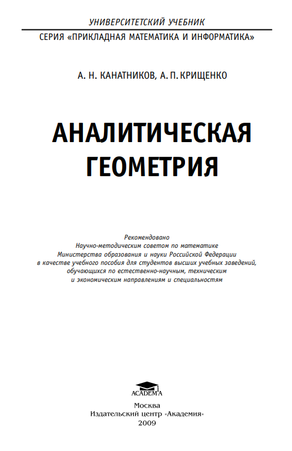
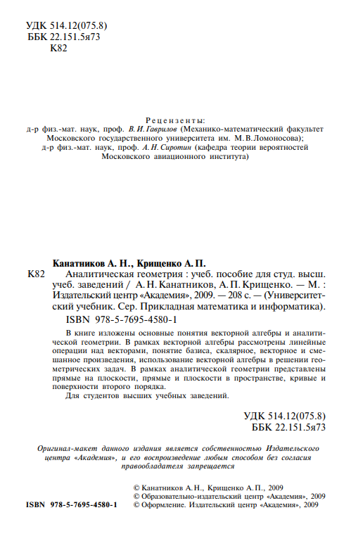

Библиотека
Научно-техническая
Аналитическая геометрия
Канатников А.Н., Крищенко А.П. | 2000
В книге излагается курс аналитической геометрии, традиционно преподаваемый в большинстве вузов в первом семестре.
Предлагаемый учебный материал разделен на три части: векторную алгебру (гл. 1 и 2), теорию прямых и плоскостей (гл. 3,
4, 5), теорию кривых и поверхностей второго порядка (гл. 6 и 7)
Векторная алгебра тесно переплетается с элементарной геометрией и представляет собой, по существу, современный язык
той части геометрии, которая связана с понятиями параллельных прямых и подобия. Предполагается, что читатель хорошо
знаком с такими терминами, как точка, прямая, плоскость, и
знает их свойства (в частности, признаки параллельности прямых, признаки равенства и подобия треугольников, признаки
параллелограмма и т.д.).
Аналитическая геометрия, основным методом которой является метод координат, представлена во второй и третьей частях
книги.
Понятие системы координат (гл. 3), так же как и многие факты аналитической геометрии, известно любому студенту еще из
школьной программы. Изучение этого раздела геометрии в вузе отличается б´ольшей строгостью и систематичностью. В книге
изложение аналитической геометрии, в частности введение декартовой системы координат, опирается на векторную алгебру.
В изложении материала по теории прямых и плоскостей (гл. 4 и
5) активно используется язык векторной алгебры.
Материал третьей части книги, посвященный кривым и поверхностям второго порядка, строится на геометрических свойствах этих объектов, а не на исследовании алгебраического уравнения второй степени.
При отборе и изложении материала авторы стремились
предусмотреть возможные различия в объеме его изучения в
разных учебных заведениях. Сложные и второстепенные вопросы, не всегда входящие в программы, даны в виде дополнений в
конце глав.
Книга имеет развитый аппарат для поиска нужной информации, позволяющий использовать ее как справочник. Важнейшие понятия, являющиеся ключевыми для понимания материала учебного пособия, выделены полужирным курсивом.
Большинство используемых обозначений дано в разделе «Основные обозначения». В приложении приведены написание и
русское произношение букв латинского и греческого алфавитов.
Перед изучением этой книги предлагается в целях самоконтроля выполнить несколько несложных заданий из раздела «Задания для самопроверки». В каждом задании курсивом выделены ключевые термины, значение которых должен знать студент
Ссылка на книгу  